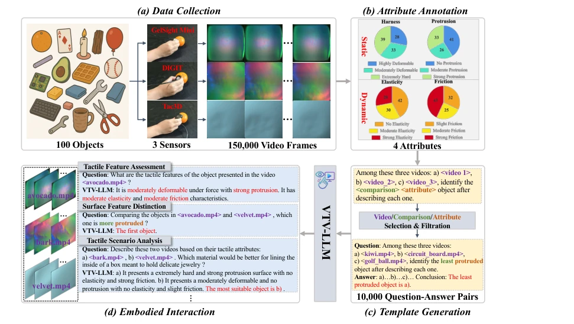
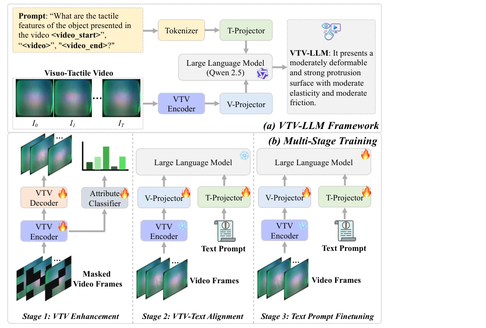
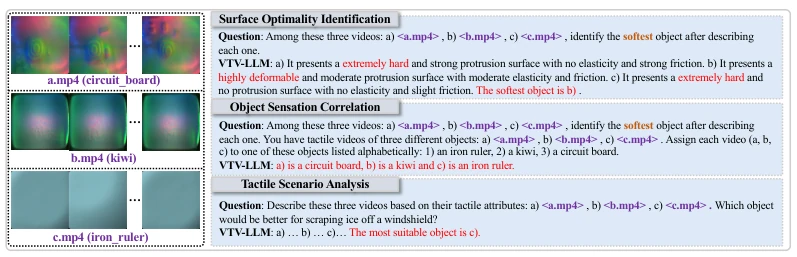
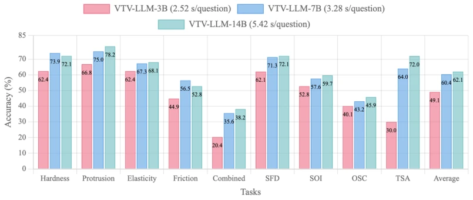

This paper attempts to bridge touch and language using LLMs, proposing VTV-LLM. The highlight is creating the VTV150K dataset, 150,000 video frames covering three sensors, which is quite substantial. However, the term "general" is slightly exaggerated, as different sensor data distributions vary greatly, and cross-domain generalization is a major pitfall. The training pipeline is the standard "pre-training + alignment + fine-tuning" three-pronged approach; although optical flow-guided masking is added, it is essentially a variant of self-supervised pre-training. Experimental performance indeed significantly outperforms open-source baselines, but facing closed-source giants like GPT-4o, the advantage lies mainly in specific touch tasks, and general reasoning capability is questionable. Overall, it is a solid attempt in the field of embodied touch, with data contribution outweighing model innovation; do not be misled by the title, there is still a distance from true "general touch understanding".
Tactile perception is crucial for embodied agents, as vision alone cannot determine physical properties such as hardness and texture [1, 2]. Although existing vision-language models are powerful, they lack tactile perception capabilities, limiting physical interaction reasoning [4, 5, 6, 7, 8]. Although there is existing touch learning research [13, 14, 15, 16, 17, 18], most focus on static attributes or fail to integrate touch and language understanding. Especially lacking the ability to ground tactile perception into natural language descriptions, and ignoring the temporal dimension of tactile interaction (such as pressing, sliding responses) [13, 18]. Existing methods face significant challenges in cross-sensor data integration and dynamic tactile video understanding, making intuitive human-machine tactile interaction difficult to achieve.

Figure 1: The workflow consists of four key components: (a) Data Collection, which includes 100 diverse objects recorded by 3 different tactile sensors, resulting in 150,000 video frames; (b) Attribute Annotation, where objects are systematically categorized across 4 static and dynamic tactile attributes: hardness, protrusion, elasticity, and friction; (c) Template Generation, which generates 10,000 question-answer pairs using structured templates for various comparative analyses; and (d) Embodied Interaction, demonstrating VTV-LLM’s capability to perform tactile feature assessment, surface feature distinction, tactile scenario analysis and so on. Through this integrated approach, VTV-LLM enables multi-modal reasoning about physical attributes that cannot be determined through visual inspe
The overall framework is divided into two parts: data construction and model training. In terms of data, 150,000 frames of video from 100 objects are collected, covering three sensors: GelSight Mini, DIGIT, and Tac3D, with four attributes labeled: hardness, protrusion, elasticity, and friction. The model adopts a three-stage training: 1. VTV Enhancement: Uses Optical Flow-guided masking for self-supervised pre-training to solve spatiotemporal deformation issues in tactile videos, and adds an attribute classifier for auxiliary learning; 2. VTV-Text Alignment: Freezes the LLM, trains visual and text projectors to establish cross-modal alignment between video and language; 3. Text Prompt Finetuning: Full-parameter fine-tuning to optimize natural language generation capabilities. Core innovations lie in the masking strategy and attribute classification head tailored for tactile video characteristics, and unified representation of multi-sensor data. Specifically, the VTV Encoder is based on ViT architecture, uses RAFT to calculate bidirectional optical flow fields, generates continuous masks via Gaussian Mixture Models, avoiding traditional binarization that destroys spatial continuity. The projection module uses bilinear layers plus GELU activation to map video features to LLM space. The LLM backbone selects Qwen 2.5. The three-stage training effectively bridges the domain gap between tactile perception and language understanding, ensuring the model can both understand physical properties and generate natural language descriptions. The total loss function combines reconstruction loss and attribute classification loss to achieve dual optimization.

Figure 2: (a) VTV-LLM framework: A multi-modal system integrating visual-tactile video data with large language models to facilitate tactile reasoning for embodied interaction; (b) Multi-Stage Training: It consists of VTV enhancement, alignment between visuo-tactile video and text, and prompt-based finetuning to generate accurate tactile descriptions.
Training and evaluation are conducted using the self-built VTV150K dataset, with the test set containing unseen objects. Baselines include GPT-4o, Gemini-2.5-Pro-Exp, and open-source video models such as LLaVA-OneVision. Evaluation metrics cover accuracy of attribute recognition such as hardness and protrusion, as well as reasoning tasks like Surface Feature Discrimination (SFD) and Tactile Scene Analysis (TSA). Results show VTV-LLM-7B achieves an average accuracy of 60.4% on comprehensive tasks, significantly outperforming GPT-4o (28.0%) and the LLaVA series. Ablation studies indicate that the optical flow masking strategy and attribute classifier significantly improve performance, and the three-stage training paradigm is more robust than single-stage or same-dataset training. Parameter scaling experiments show that larger models perform better, but inference costs increase.

Figure 4: Several task examples from the proposed VTV150K along with predictions from VTV- LLM.

Figure 5: Performance comparison of VTV-LLM on the different parameters.